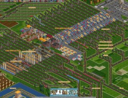
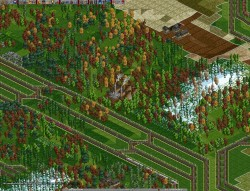
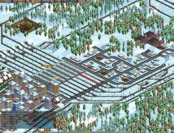

Sandbox Game 11 Coming to an End
The current sandbox game, the 11th, is coming to an end after 12 days in the running.



This game was also the first trial of the bi-directional main line, a concept created by OwenS. The main purpose of the bi-directional mainline is to let trains overtake other trains, allowing every train on the main line to travel at its fastest speed.



In my opinion this was an excellent sandbox game with interesting ideas put into motion and a few headaches along the way but nonetheless, fun.
Categories: Public Server